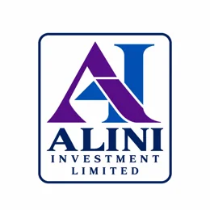

Our vision
To become one of the most trusted business consultancy enterprises in Africa, with the capacity to extend consultancy and investment-security solutions globally while partnering with our clients.

Management, investment, feasibility study and special economic zones development consultancy.
Our experience brings together industry, export promotion and international business connections.
Explore our experience ↗Alini Investment Limited connects investors from around the globe to African opportunities, with a particular focus on West Africa.
Incorporated in Nigeria on 9 October 2003, AIL provides investment advisory and consultancy services to foreign and domestic investors. Our work combines feasibility studies, business structuring, stakeholder engagement and implementation support.
Our contacts with governments, international agencies and corporations support the practical linkages we develop for clients.
To become one of the most trusted business consultancy enterprises in Africa, with the capacity to extend consultancy and investment-security solutions globally while partnering with our clients.
To empower people and businesses through solutions tailored to their business-excellence needs, and provide insightful knowledge of Special Economic Zones and political economy.
Open, accurate communication at every stage of an engagement.
Dedicated to our clients’ objectives from brief to delivery.
Sector, regulatory and free zone knowledge applied in practice.
Candid advice, including when it is difficult to hear.
Rigorous work that stands up to scrutiny by investors and regulators.
Relationships built to last beyond a single assignment.
Alini Investment Limited · RC 496631 · Incorporated 9 October 2003.
The company profile records VAT registration through the Calabar Micro and Small Tax Office in 2014. TIN available on request.
Chief Jackson is Technical Adviser to AFZA and served on the organising committee of its 2008 international convention. He served as MAN Branch Chairman for Cross River–Akwa Ibom States from 2007 to 2018.
Share your project, priorities and the support you need.
Talk to Alini ↗